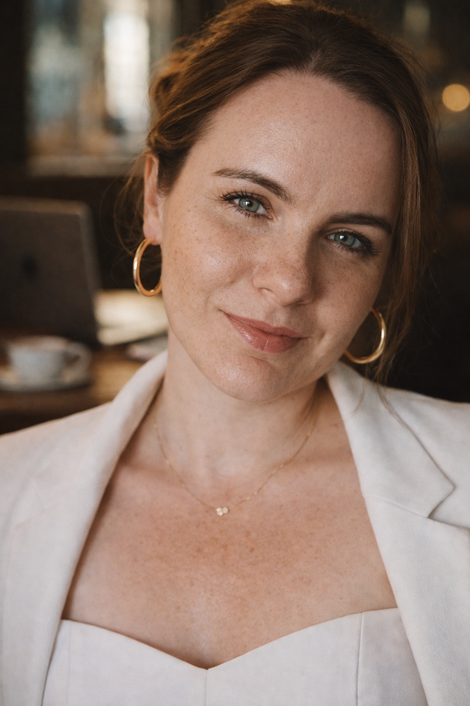

Сейчас для вас важно перестать обесценивать себя и свои желания. Эта карта говорит про рост, изобилие и внутреннюю ценность. Деньги приходят туда, где женщина разрешает себе хотеть большего.
Ситуация может начать двигаться быстрее, чем вам кажется. Важно не откладывать решения и не ждать идеального момента. Сейчас многое зависит от вашей готовности действовать.
Ваш ресурс — в спокойствии, устойчивости и заботе о себе. Когда женщина перестаёт жить только через напряжение и контроль, её состояние начинает притягивать возможности и деньги.